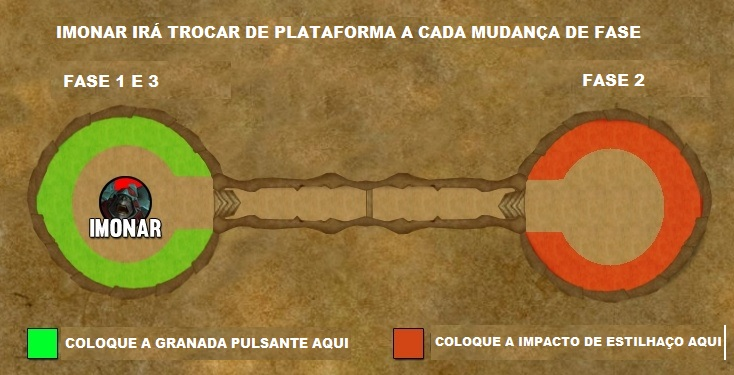

Imonar the Soulhunter
Resumo
- A luta acontecerá em 2 plataformas conectados por uma ponte, conforme as fases ele trocará de plataforma.

Primeira Fase
Tanks
- O Tank com o Boss levará Lança de Choque dano fisico que aplica um debuf de 20 Seg, aumentando 10% por stack. Além disso, o alvo eletrocuta outro jogador, causando dano de Natureza a cada 3 s para cada aplicação.
-
O taunt deve ser trocado entre 3 ou 4 stacks.
-
O boss irá castar Granada Pulsante em players aleatórios deixando minas verdes no local. Caso alguem pise, será empurrado para traz e receberá um defuf que aumenta 50% o dano natureza recebido por 20 Seg.

-
O boss irá castar Bomba de Sonolencia em dois players aleatorios e irá colocalos para dormir por 20 seg, quando o debuf acaba ou é dispelado os players proximos (10 yards) irão receber Gás da Sonolencia por 8 segundos (não é dispelável).
-
Os players deve ficar na platadorma durante a fase (até 66% de vida do boss) caso contrario o bos irá castar Foguetes Infernáis que atinge quem sair, causando um grande dano de fogo e um debuf que causa 25% a mais de dano de fogo por 30 Seg, Este efeito acumula.
DPS / Healers
- Os rangeds e melees devem ficar stakados separagamente.
- Ao receber Granada Pulsante saia de perto do grupo e leve a mina para os cantos da sala.
- Evite pisar nas minas geradas por Granada Pulsante por conta da explosão que gera do knock back em players proximos.(3 yards),
- Quando for marcado Bomba de Sonolencia saia do grupo e solicite o dispel assim que estiver no minimo 10 yards dps outros players.
- Caso quem receba Bomba de Sonolencia não saia do grupo a tempo, todos devem se afastar antes que seja dispeldo.
Primeira Transição 66% de vida.

- O boss ira atravessar a ponte até a outra plataforma.
- A ponte terá varias minas de Granada Pulsante.
-
A ponte tambem terá Armadilhas de estase que causan dano e atordoam (dispelável) em todos a volta em 3 yards por 8 segundos quando é ativada.(somente Heorico)
-
Assim que o Boss chegar a outra plataforma ele ira castar Conflagração criando orbes flamejantes que viajam lentamente pela ponte. Entrar em contato com um orbe flamejante causa dano de Fogo e reduz em 50% a velocidade de movimento do alvo por 6 sec. (somente Heroico)
-
Quando Conflagração cria as orbs uma poça verde no chão gera Pele Calsinada se for atingido irá receber dano e um debuff que aumenta em 75% o dano recebido por 1 minuto. Debuf staca.
-
Assim que todos attravessarem a ponte deve ser interrompido a Conflagração.
Todos.
- Evitem ao maximo Granada Pulsante, Armadilhas de estase e as orbs da Conflagração.
Segunda Fase
Tanks
- O Tank com o Boss levará Arrancar causa dano Físico e um debuff que causa dano Físico a cada 2sec durante 18 sec. Este efeito acumula. Utilizar mitigação ativa para o hit do boss.
-
O taunt deve ser trocado entre 3 ou 4 stacks.
-
O bos irá castar Impacto do Estilhaço em players aleatórios deixando minas laranjas no local. Caso alguem pise, receberá dano Físico e aplicara um debuff nos alvos em um raio de 4 yards a cada 2 s por 30 sec.

-
Impáctos Carregados o boss convocara naves da Legião que apontam para dois jogadores. Após 7 sec, as naves disparam um laser na direção do alvo marcado, causando dano de Fogo e um debuff que causa dano de Fogo a cada 3 s por 18 sec. Jogando para traz (knock back) os playes atingidos.


Segunda Transição 33% de vida.

- O boss ira atravessar a ponte até a outra plataforma.
-
Assim que o Boss chegar a outra plataforma ele ira castar Conflagração criando orbes flamejantes que viajam lentamente pela ponte. Entrar em contato com um orbe flamejante causa dano de Fogo e reduz em 50% a velocidade de movimento do alvo por 6 sec. (somente Heroico).
-
Na ponte terão ainda mais minas, além das minas de Granada Pulsante, tambem haverão minas de Impacto do Estilhaço que causam quem causam um debuff de 30 segundos em todos proximos.
-
Agora tabém tem Fio Explosivos, uma linha laranja que se atravessa scausara dano a toda raid.
-
Como o caminho estará quase completamente obstruido para auxiliar a travessia algum player com immune e com ajudar de um Healer para dispelar, deverá passar em cima das Armadilhas de estase pois o Stun pode ser dispelado e limpa o caminho para os outros players.
-
Assim que todos attravessarem a ponte deve ser interrompido a Conflagração.
Healers
- Nesse momento é importante potencializar a cura com cowdonw de healers.
Todos
- Quem for mirado pelas naves, deve afastar do grupo e não deixar ninguem em seu caminho, é imporatante ficar longe da beirada da plataforma pois será jogado para tras.
Terceira Fase
- Nessa fase o Imonar ira empoderar suas habilidades da fase 1 e 2
- É importante usar o lust nessa fase.
Tanks
- O Tank com o Boss levará Lança de Choque Potencializada dano fisico que aplica um debuf permanente, aumentando 10% o dano tomado por stack. Além disso, o alvo eletrocuta outro jogador, causando dano de Natureza a cada 4 s para cada aplicação.
-
O taunt deve ser trocado a cada 2 staks
-
Granada Pulsante Potencializada agora aplica um debuf de 46 segundos a alguns players e iram ficar pulsando dano e jogando para tras qualquer um em volta a 5 yards. Players maracdos deverão ficar longe do grupo e proximos(não em ciam) a outras granadas ja posicionadas na fase 1.
-
Impacto de Estilhaço Potencializado irá bombardear a plataforma no lugar de pequenos circulos verdes no chão. Se for atingido ira receber um dano e um debuff permanente que acumula.